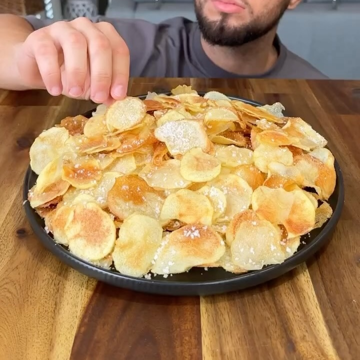

Papas sal y vinagre
Ingredientes:
- 400g de papas - cortadas en rodajas finas (papas Carisma de Coles - estas papas en particular tienen
un 25% menos de carbohidratos en comparación con las papas regulares, pero se pueden sustituir por
papas russet. Asegúrate de pelar las papas antes).
- Aceite en spray para cocinar ligero (Frylight)
- 2 cucharadas de escamas de sal marina (se puede sustituir por sal kosher o cualquier sal baja en
sodio)
- 3-4 cucharadas de vinagre blanco (mezclar con la sal)
- 1/2 taza de vinagre blanco (agregar al agua hirviendo con las papas)
Instrucciones:
- En un plato añade la sal y las 3 a 4 cucharadas de vinagre, y mezclalos.
- Manda el plato al horno por 10 mins a 200° C
- Agarra tus papas y córtalas a rodajas muy finas
- Remoja las papas en un baño de hielo durante 10 minutos
- Ya salido el plato del horno, remueve la mezcla y métela a una bolsa ziploc. A continuación,
aplástala hasta que quede bien fina, y ya fina muévela a un bowl.
- Hierve las papas durante 5 minutos con 1/2 taza de vinagre.
- Seca las papas completamente con una servilleta/servitoalla.
- Rocialas papas con aceite en spray
- Cocínalas en la airfryer a 200°C durante 10 minutos (dar vuelta a la mitad del tiempo). O mandalas
al microondas de 8 a 10 mins (en un plato con papel de horno y aceite en spray - dar vuelta a la
mitad del tiempo)
- Ya fritas, añade la sal con vinagre y mezclalas bien